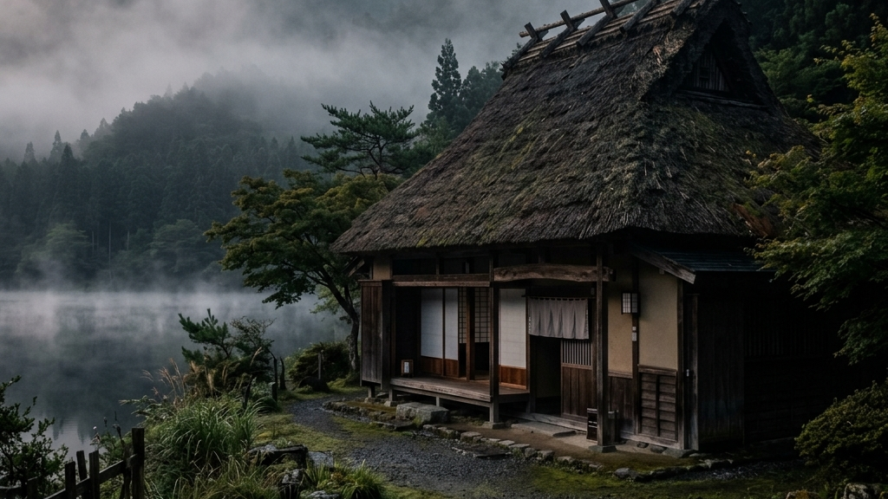
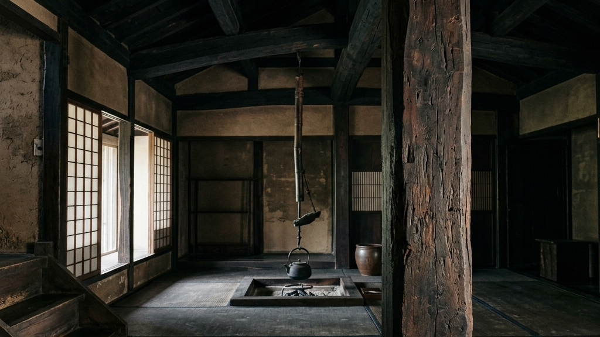
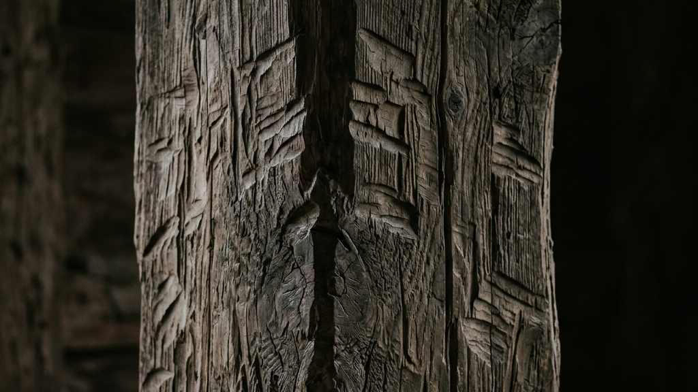
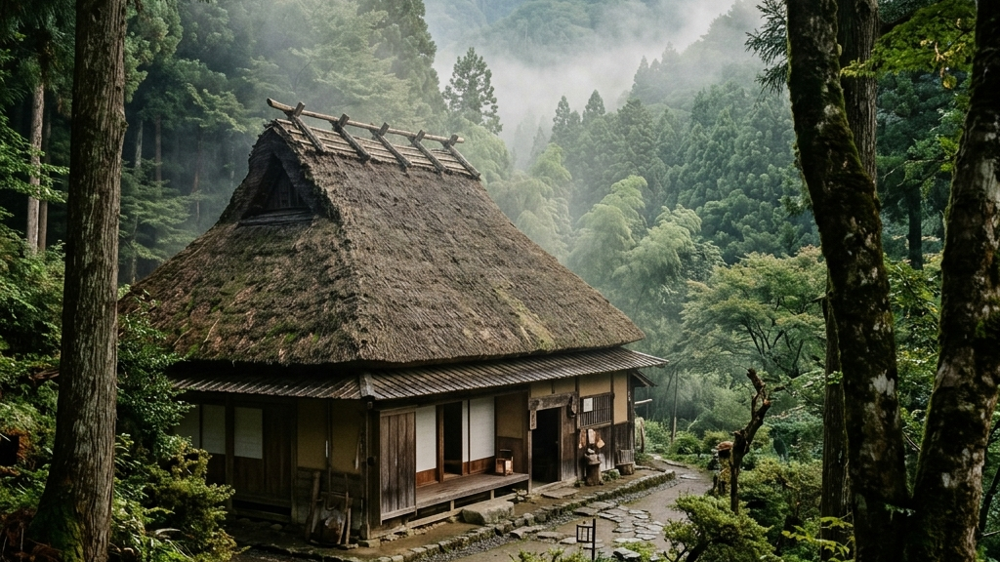
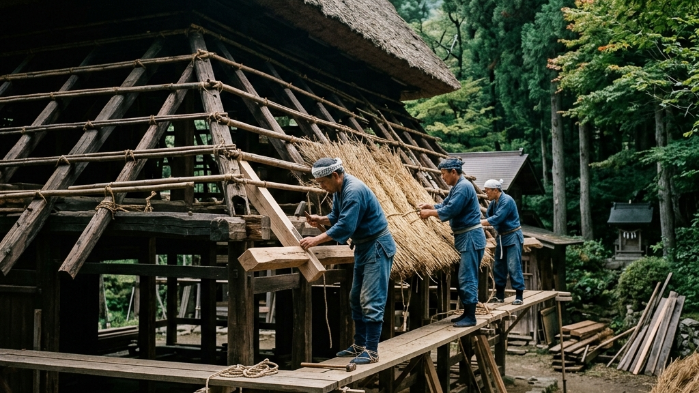
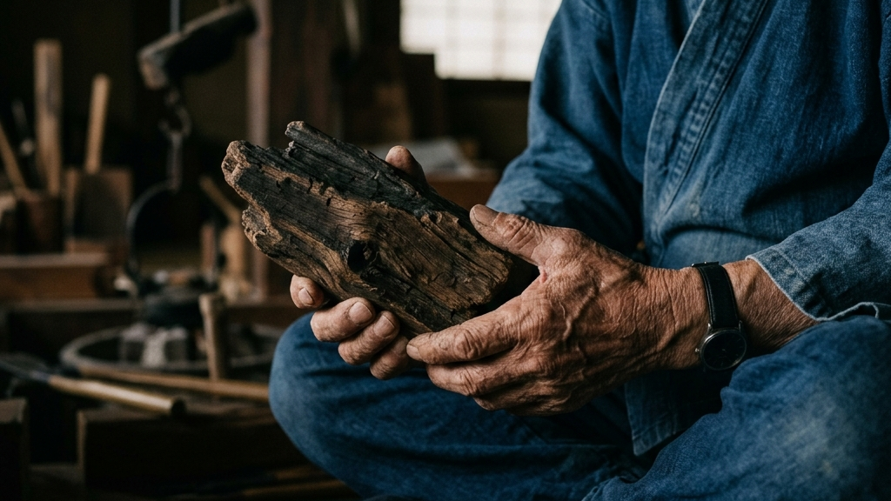
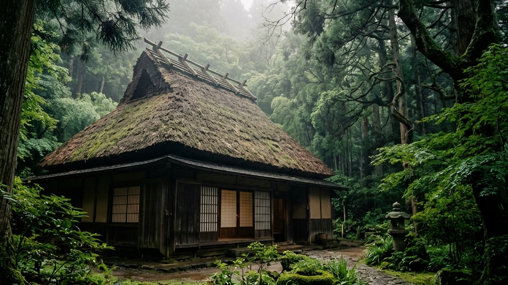

吹き抜ける風が、茅葺き（かやぶき）の軒先を優しく揺らしています。そこには、数百年もの間、ただ静かに、しかし力強くそこに在り続けた人々の息吹が今も確かに宿っています。私たちの想像を遥かに超える時間の地層を湛えたその木造の佇まいは、効率化を極限まで追い求める現代社会において、失われかけていた「生きた証」を私たちに静かに問いかけています。
【本稿で紐解く3つの核心】
風雪に晒され、黒く燻（いぶ）された一本の太い柱。その表面に深く刻まれた凹凸にそっと触れるとき、私たちは時空を超えて、中世の山里で静かに灯されていた家族の営みへと引き込まれていきます。兵庫県の山間に佇む二軒の古い民家——神戸市北区の「箱木家住宅（箱木千年家）」と、姫路市安富町の「旧古井家住宅」。これら二つの木造建造物が、民家としては全国で初めて国宝に指定される答申が出されたというニュースは、単なる建築史のトピックに留まらず、私たちが忘れかけていた「時間を遺すこと」の真の意味を痛烈に提示しています。
重要文化財として保護されてきた数ある古民家の中でも、この二軒が突出して「世界資産」としての極限の強度を誇るのはなぜでしょうか。それは、戦乱、飢饉、そして近代化による開発といった,幾重もの存続の危機を奇跡的に潜り抜け、中世の「暮らしの原型」をそのまま現代に連れてきたからです。そこには、効率や利便性の対極にある、自然の理（ことわり）と泥臭く対話しながら生き抜いた先人たちの圧倒的な意志が宿っています。本稿では、この二つの千年家が辿った波乱に満ちた軌跡と、そのディテールに秘められた美学、およびそれを命がけで守り抜いてきた人々の覚悟のドラマを深く紐解いていきます。

国の文化審議会が、兵庫県に現存する箱木家住宅の主屋と旧古井家住宅を国宝に指定するよう答申したという知らせは、日本の文化財保護の歴史における決定的な転換点となりました。これまで神社仏閣や城郭、上流階級の邸宅にのみ許されていた「国宝」という絶対的な光が、ついに「庶民の暮らしの場」であった民家へと投げかけられたのです。それは、名もなき職人たちの手仕事と、日々の営みを営々と紡いできた市井の人々の足跡こそが、1,000年先へ遺すべき至高の資産であると国家が公式に認めた瞬間でもありました。
「民家という、日々の極めて日常的な生活が営まれていた空間が国宝になる。これは、私たちの足元にある些細な日常の連続性の中にこそ、最も侵しがたい神聖な美が眠っていることの証明に他ならない。」
— 建築史における国宝指定答申の真の解釈
これまで、民家はその性質上、常に生活様式の変化や都市開発の圧力に晒され、取り壊される運命にありました。実際に、日本全国に数え切れないほど存在したであろう中世の民家は、そのほぼ全てが歴史の闇へと消え去っています。その中にあって、神戸の「箱木千年家」は室町時代前期（14世紀）の建築であり、日本最古の民家としての絶対的な強度を誇ります。また、姫路の「旧古井家住宅」は室町時代後期（15世紀）の息吹を今に伝える最古級の民家です。建築の専門家たちが「中世民家の姿をこれほど良好な状態で残している例は、日本国内はもちろん、世界的に見ても他に存在しない」と驚嘆するその理由は、単に古いからではありません。そこには、安易な「スクラップ＆ビルド」の誘惑に一度も負けることなく、世代を超えて技術と空間を守り続けてきた、気の遠くなるような時間の堆積があるのです。これらはまさに、失われかけた生きた証のカケラが、現代のアートや哲学と交差しながら、未来の資産へと織り直されるプロセスそのものであると言えます。
かつて青葉神社の修繕費用不足から紐解く、有形文化財の限界と1,000年先の防波堤という事例で論じたように、有形文化財の維持と存続には常に過酷な限界が付きまといます。しかし、今回の指定は、私たちが以前非観光型・小規模文化財の活用モデル 文化庁コーチング事例と辰巳清教授の視点において考察した、歴史的価値を過度の観光化で消費させることなく、静かに保護・継承していく非観光型モデルの極限の具現化に他なりません。兵庫県内における建造物の国宝指定は、1955年の太山寺本堂（神戸市西区）以来、実に71年ぶりの快挙となります。この「71年」という歳月が示すのは、文化財を国宝として認めるための審査がいかに厳格で、非妥協的であるかという事実です。私たちの家業や日々向き合っている仕事も、短期的な時しのぎや流行ではなく、1,000年先の防波堤となるような揺るぎない土台を築けているか。この国宝指定のニュースは、私たち現代人が追い求めるべき「本物の価値」のあり方を、その重厚な佇まいを通して静かに、しかし鋭く指し示しているのです。

箱木千年家の内部に一歩足を踏み入れると、まず目を奪われるのは、太く頑強な梁（はり）と柱が織りなすダイナミックな骨組みです。現代の均一でなめらかな製材された木材とは全く異なる、一本一本が独自のうねりと凹凸を持った柱たち。ここには、鋸（のこぎり）という便利な道具さえまだ普及していなかった室町時代前期（14世紀）の、驚くべき木造技術の極致が息づいています。当時の職人たちは、巨木を楔（くさび）で物理的に裂く「割肌（わりはだ）」という原始的かつ力強い手法で柱を切り出し、それを「ちょうな（手斧）」と呼ばれる斧のような道具で根気強く削ることで木肌を整えていました。この「ちょうな仕上げ」の跡こそが、光の角度によって波打つような静謐な陰影を生み出し、空間にえも言われぬ侘び寂び（わびさび）の情緒を与えているのです。
Muromachi Structural Aesthetics
それは、日本が誇るもう一つの奇跡的な木造屋根である岡太神社と大瀧神社 檜皮葺の「日本一複雑な屋根」と職人の手仕事の意匠に勝るとも劣らない、木造のディテールが放つ静謐な迫力です。ちょうなで削られた柱の表面を指先でなぞると、まるで職人の手の体温や、かつて山中で風に吹かれていた巨木の鼓動が、ダイレクトに伝わってくるかのような身体感覚を覚えます。この「木を無理に人間の都合に合わせてねじ伏せるのではなく、木の性質や曲がりに合わせて人間が道具を合わせ、己の技術を最適化していく」という姿勢。これこそが、日本の木造建築における『守破離』の精神の原点であり、私たちが現代の複雑なビジネスやマネジメントにおいて模索すべき「コントロール不能な対象の受容と構造化」の極めて美しいアナロジーと言えるのではないでしょうか。
さらに、箱木千年家の主屋は、土間（どま）と広間（ひろま）が壁一枚隔てることなく一体となった、中世ならではの原始的かつ開放的な空間構成を持っています。中央に配置された囲炉裏（いろり）から立ち上る煙は、700年以上にわたって屋根裏の茅を燻し、害虫や湿気から木材を守り続けてきました。この、日々の暮らしの営みそのものが、同時に建物を永久に維持するためのメンテナンスシステムとして完璧に機能しているという驚異的な知恵。短期的な「タイパ」や「一時しのぎの効率」ばかりを追求し、自らの手で持続可能性を破壊しがちな現代人にとって、この千年家の無駄のない構造美と循環思想は、言葉を失うほどの説得力を持って迫ってきます。

箱木千年家（箱木家住宅）がダム建設に伴う移築という「激動の再生ドラマ」の象徴であるならば、今回同時に国宝に指定される見通しとなった姫路市安富町の「旧古井家住宅」は、まさに**「静寂の静止画」**と呼ぶにふさわしい、もう一つの奇跡の形を示しています。室町時代後期（15世紀）の建築とされるこの民家が、日本の民家史において唯一無二の強度を誇るのはなぜでしょうか。それは、建物単体の物理的保存状態が極めて優れているという理由だけに留まりません。旧古井家住宅の真の驚異は、建築当初から周辺の地形、立ち並ぶ樹木、吹き抜ける風の通り道といった「風土と景観の生態系」が、数百年の時を超えてほとんど変わることなく、当時のままの形で奇跡的に維持されてきた点にあります。
私たちはつい、文化財や歴史的資産を語る際、目に見える建物（ハードウェア）のディテールにばかり目を奪われがちです。しかし、旧古井家住宅が提示しているのは、建物とその周囲を取り巻く自然環境（ソフトウェア）が有機的に溶け合うことで初めて現出する、中世の「暮らしの気配」そのものです。山間の集落において、理不尽なまでの厳しい冬の寒さや夏の湿気、および時に牙を剥く不確実な自然と対話し、それを受容しながら生きた中世の人々の精神性。それは、建物単体をコンクリートの近代的な美術館に閉じ込めるだけでは決して伝わらない、土地と一体となった「生きた記憶」に他なならいません。
| 国宝民家（兵庫県） | 物理的特長と建築年代 | 歴史的・概念的特異性 |
|---|---|---|
| 箱木家住宅（神戸市北区） | 室町時代前期（14世紀）。割肌の太い柱と「ちょうな仕上げ」による荒々しくも頑強な初期の木造構造。 | 「日本最古の民家」。ダム建設による水没危機を「解体・移築」という執念の技術で乗り越えた再生の象徴。 |
| 旧古井家住宅（姫路市安富町） | 室町時代後期（15世紀）。中世から近世へと移行する過渡期の木造技術。茅葺きの寄棟造と精緻な梁組。 | 「景観維持の奇跡」。移築を経ず、数百年前のまま山間の風土や自然環境と一体となって存続し続けた静寂の極地。 |
旧古井家住宅の最大の見どころは、やはり中世の山里の厳しさを耐え抜くために設計された、極めて簡潔で無駄のない「引き算の美学」に満ちた意匠です。窓を極限まで小さくし、風雨の侵入を防ぎつつ熱を逃がさない重厚な土壁。そして、太い梁（はり）を荒削りのままダイナミックに交差させ、建物の荷重を分散して支える驚異的な構造美。これらは、派手な装飾や流行に逃げることなく、ただ「サバイバル（生き延びること）」という冷徹な機能要件に対して職人たちが手の中で最適解を追求し続けた結果、おのずと顕現した究極の用の美です。このような「作為のない美」と、何代にもわたってこの静かな佇まいをひたすら守り続けてきた地域の連綿たる意志こそが、1,000年先の未来へと受け継ぐべき本物の世界資産としての存在証明に他なりません。
私たちの日常や組織論においても、この旧古井家住宅が示す「環境との調和的生存」は、極めて深い示唆を与えてくれます。変化の激しい現代、私たちはつい、新しいツールや派手な記号（流行）を取り入れて表面的な最適化（イシューのズレた解決）を図ろうとしがちです。しかし、本当に長く存続し、しなやかな強さを育むために必要なのは、余計な装飾を削ぎ落とした「強固な骨組み（ロジック）」を持ち、かつ自分を取り巻く風土や顧客、環境の微細な変化を自然体で受け入れながら、ただ愚直に「やめないで続ける」ことなのです。この静かななる存続の奇跡は、現代を生きるビジネスパーソンに対しても、小手先のテクニックを捨てて本質に向き合うための、冷徹で美しい防波堤として立ち塞がっているのです。

日本最古の木造民家として国宝に指定される箱木千年家ですが、その歴史は決して平坦なものではありませんでした。今から半世紀ほど前の昭和40年代後半（1970年代）、神戸市北区の山田川を堰き止める大規模な利水計画「呑吐（どんと）ダム」の建設が持ち上がり、箱木千年家はその水没予定地のまさに中心に位置することになってしまったのです。ダムの底へと沈み、永遠に水の底に隠されてしまうという、木造の遺産にとって最大の存続の危機。この時、もし当時の人々が「時代の変化だから仕方がない」「非効率な古い民家を維持する予算などない」と妥協し、タイパや利便性のみを選択していたならば、今回の「民家初の国宝」という偉大な未来は、水の底で完全に潰えていたはずです。
しかし、ここで立ち上がったのは、歴史の連続性を愛し、先人たちの生きた証を未来へ繋ごうとした地域住民と、文化財保存に命をかけた専門家たちの「執念」でした。「この圧倒的な価値を、絶対にダムの底に沈めてはならない」。その固い覚悟のもと、国や自治体を巻き込んだ前代未聞の移築プロジェクトが始動しました。1977年から1979年にかけて、元の場所から数十メートル上の高台へと、建物の解体・調査・移築がそっくり行われたのです。この気が遠くなるような解体・移築のプロセスは、ただ古い建物を動かすという物理的作業を超え、失われかけたカケラを現代の知恵で織り直す、極めてクリエイティブな「構造の解剖」となりました。
呑吐ダム（つくはら湖）の建設によって、箱木千年家が水没ラインの直下に位置することが判明。保存か消滅かの激しい葛藤が生まれる。
解体調査の過程で、梁の年輪や建築技法から、この主屋が室町時代前期（14世紀）に建てられた「日本最古の木造民家」であることが科学的に証明される。
ダム湖の畔（つくはら湖畔）に移築され、静かに佇み続けた50年を経て、その類稀なる保存状態と中世民家の美学が評価され、国宝答申という最高峰の栄誉へ至る。
ダム湖底から救い出され、時の審判に耐えた千年家は、まさに私たちが以前実用品から1,000年先の遺産へと昇華する歴史的転換点。工芸プラットフォームが示す「芸術の再定義」というパラダイムの移行を物理的に証明しています。実に興味深いことに、この水没危機による「解体・移築」という非効率で泥臭い摩擦があったからこそ、箱木千年家は自らの「真の価値」を世に証明することができました。解体時に木材の接合部や柱の年輪、建築様式をミクロな視点でファクトチェックした結果、これまで「江戸時代の建築ではないか」と推測されていた主屋が、室町時代前期の14世紀まで遡る「現存最古の民家」であることが学術的に完全証明されたのです。もし、ダム建設という強烈な外的危機がなく、ただなんとなく現状維持を続けていただけだったなら、この「日本最古」という確固たる事実は歴史の霧の彼方に埋もれたままだったかもしれません。
これは、私たちのビジネスや人生における「予期せぬ壁やトラブル」の受容のあり方と、激しく共鳴します。一見すると絶望的に思える水没危機という摩擦。しかし、そこから目を背けずに事実を握り、徹底的に解剖し、構造化して再編したからこそ、「日本最古の国宝民家」という圧倒的な再現性（価値）が生まれました。危機をただ避けるのではなく、その摩擦を利用して価値を何倍にも引き上げるという、静かでソリッドな再生のロジックが、ここには美しく体現されているのです。

箱木千年家が国宝に指定されるという歴史的快挙の裏側で、誰よりも静かに、しかし最も重い覚悟をその背中に背負い続けてきた人物がいます。箱木家の51代当主である、箱木実さん（94歳）です。室町時代から数えて実に51代。この数字の前に、私たちはただ圧倒されるしかありません。700年という果てしない歳月の中、一度たりともその血脈と管理のバトンを途絶えさせることなく、ただ愚直に「家を守る」という一点において人生を捧げてきた一族の歩み。それは、現代のめまぐるしく変化する流行や、タイパを重視する小手先のテクニックがどれほど薄っぺらいものであるかを、痛烈に突きつけるファクトです。
「先代から受け継いだ大切な家。自分の代で絶対に潰すわけにはいかない。どれほど時代が変わろうとも、ただ静かに、しっかり守っていきたい。」
— 51代当主・箱木実氏の静謐なる誓い
この51代という途方もないバトンは、決して偶然や幸運の連続などではなく、私たちが防府市 白石家の登録有形文化財と260年続く家業の蘇生において目撃した、受け継いだ土地と建物を何世代にもわたって維持し抜くという人間の尊い美学そのものです。94歳という高齢でありながら、箱木実さんが語る「しっかり守っていきたい」という言葉の質感には、AIがでっち上げるような安っぽいポエムや、一時的な感情の高ぶりは微塵も存在しません。そこにあるのは、何世代にもわたる先祖たちの足音を背中で聞きながら、ただ「やめない」ことを自らに課し続ける、人間の極限の執念です。多くの人が「主役」として自分の名前を世に残そうと躍起になる現代において、当主は自らを「千年の時間を未来へと引き継ぐための、静かな守り人（裏方）」として完璧に定義しています。この、主役から脱却し、ただ「守るべき大いなる連続性」のために己を最適化していく覚悟こそが、かつての激動の歴史の嵐の中で、この民家を無事に存続させてきた本当の強さの本質と言えます。
「やめないやつが一番強い。小さくても続けて自分の文化にする」。このKakeraの揺るぎないValueは、51代当主の生き様そのものに他なりません。どれほど社会が効率化を求め、古いものを「無駄」と切り捨てようとも、その理不尽な同調圧力に屈することなく、毎日粛々と茅葺きに風を通し、柱の埃を払い、そこに在り続ける。この不器用で執念深いエネルギーこそが、途絶えゆく時代の荒波に抗い、700年という気の遠くなるような時間を物理的に生存させてきたのです。私たちは、この94歳の当主の静かな背中から、真に「1,000年残る資産」を創り出し、守り抜くための本当の矜持と覚悟を、血の通った一次情報として学ばなければならないのです。

つくはら湖の穏やかな湖畔。豊かな緑と静かな水面に囲まれたその高台に、現在の箱木千年家は佇んでいます。それは、ダム建設という激動の昭和のドラマを経て、この地に再び優しく織り直された「静寂の聖域」そのものです。ダム湖の豊かな自然と完全に調和したその姿を遠くから見つめるだけでも、私たちの心には不思議な静けさが満ちていきます。ここは、単に歴史的な建築物を消費するための「観光地」ではありません。情報過多のアルゴリズムに最適化され、分かりやすい結論や即物的なタイパばかりを求めて疲弊してしまった現代人が、本来の豊かな感性と「思考体力」を取り戻すための、極めて贅沢なリハビリテーションの空間なのです。
薄暗い主屋の土間に立ち、囲炉裏の燻された木肌の香りを肺いっぱいに吸い込むとき、私たちは自身の五感が静かにひらかれていくのを感じます。そこには、スマートフォンの画面をスクロールする速度では決して味わうことのできない、圧倒的な「余白と行間」が存在しています。太陽の動きとともに刻一刻と変化する、ちょうな仕上げの柱に落ちる影の微細なグラデーション。風が茅葺きの隙間を通り抜ける静かな音。見ようとすれば、感じようとすれば、この空間に満ちているすべてが極めて奥深く、そして面白いという事実に、私たちはハッと気づかされるのです。劇的なアトラクションがなくとも、ただそこに在るモノや空間の微細な変化を見逃さない解像度を持てば、世界はどこまでも奥深く、面白い。この視座は、人間関係やビジネス、そしてアートの鑑賞においても全く同じであり、独自の視座（インサイト）を養うための最高の土壌となります。
完璧な正解のないこれからの時代、私たちは答えを外側のAIやアルゴリズムに求めるのではなく、この千年家のように、混沌とした環境や理不尽な風雪を受容した上で、自らの手で「ソリッドな構造」を編み上げる技術を磨かなければなりません。そのための第一歩として、あえてスピードを落とし、この1,000年の時間が堆積した風土の旅へと足を運んでみてください。風が磨き上げた空間の中で、あなたの眠っていた感性が再び力強く躍動し始めるのを、確かに実感できることでしょう。
Reference:
箱木家住宅主屋 旧古井家住宅 兵庫の民家２軒が全国初の国宝に、９４歳の５１代当主「しっかり守っていきたい」…専門家「中世民家の姿をこれほど良好な状態で残している例はない」
伝統を身に纏い、1,000年先の未来へ遺す。Kakeraが織り上げる西陣織アロハシャツの哲学と私たちの物語は、CONCEPT、Kakera Aloha、およびABOUTよりご覧いただけます。